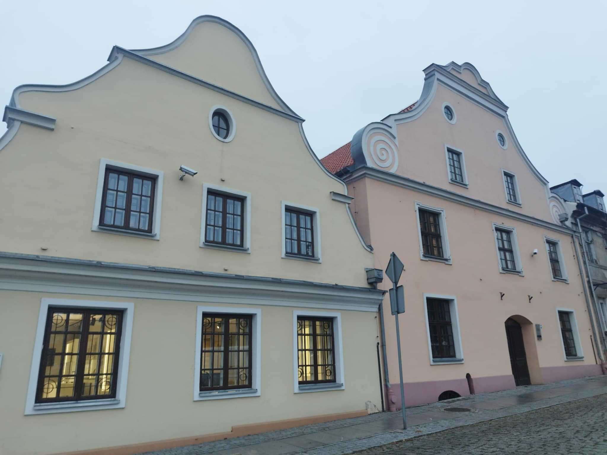

Kamieniczki
Barokowe kamienice na Starym Rynku we Włocławku, pod numerami 14 i 15, stanowią jedne z nielicznych zachowanych zabytków mieszkalnych miasta z XVIII wieku. Powstałe między XVI a XVIII stuleciem, swoją nazwę zawdzięczają barokowym szczytom ozdobionym falistymi spływami, które wyróżniają ich fasadę. Wpisane do rejestru zabytków w 1985 roku, kamienice są przykładem dawnej architektury mieszczańskiej. Podczas renowacji przeprowadzonej w latach 1966–1972 odkryto, że budynek przy Starym Rynku 14 mógł powstać już w XVI wieku, o czym świadczy odkryty gotycki układ cegieł i wnęka okienna w północnej ścianie.
Kamienica przy Starym Rynku 14 ma trójosiową elewację oraz mansardowy dach, który zastąpił pierwotny dwuspadowy podczas przebudowy w XVIII wieku. Wnętrze kryje imponującą salę o wymiarach 8x12 m, z drewnianym stropem z belkami z XVI wieku, która prawdopodobnie pełniła funkcje reprezentacyjne lub handlowe. Obok kamienicy nr 14 znajduje się nieco mniejsza kamienica pod numerem 15, wzniesiona w XVIII wieku na miejscu wcześniejszego drewnianego budynku. Parter budynku nr 15 pierwotnie wykorzystywano na cele handlowe, a piętro na mieszkalne.
Dziś oba budynki, połączone w jedną przestrzeń wraz z XIX-wieczną kamienicą przy ul. Szpichlernej 19, mieszczą Muzeum Historii Włocławka – oddział Muzeum Ziemi Kujawskiej i Dobrzyńskiej. Dzięki renowacji z lat 1966-1972 zachowano oryginalne elementy architektoniczne, odtwarzając drewniane stropy i oryginalne układy pomieszczeń.
Źródło
